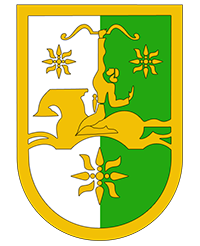

Рицинский реликтовый национальный парк располагается в горной части Абхазии — на южном склоне Главного Кавказского хребта в пределах от реки Геги до реки Пщица. Он был основан в 1996 г на базе Рицинского заповедника, созданного в 1930 г.
| Название | Описание | Координаты |
|---|---|---|
| оз. Рица | Горное озеро ледниково-тектонического происхождения на Западном Кавказе, в Гудаутском районе Абхазии. | 43.481655, 40.540688 |
| оз. Малая Рица | Озеро к востоку от Гагрского хребта в бассейне реки Юпшара в 5 километрах западнее озера Большая Рица. | 43.475303, 40.502837 |
| оз. Мзы | Расположено выше о. Рица после минеральных источников Ауадхара на высоте 2000 метров над уровнем моря, посреди каменной чаши с отколотыми краями. | 43.520915, 40.577702 |
| Гегский водопад | Водопад в Абхазии высотой около 70 метров. Расположен в северных отрогах Гагрского хребта на высоте 530 метров над уровнем моря. | 43.4349851, 40.4425902 |